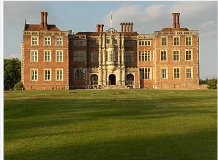

From wikipedia, the free Encyclopedia
Bramshill house
Bramshill House, in Bramshill, northeast Hampshire, England, is one of the largest and most important Jacobean Prodigy house mansions in England. It was built in the early 17th century by Baron Edward ia Zouche of Harringworth but was partly destroyed by fire a few years later. The design shows the influence of the Italian Renaissance, whcih became popular in England during the late 16th century. The house was designated a Grade i listed building in 1952. The mansion's southern facade is notable for its decorative architecture, which includes at its center a large Orel window above the principle entrance. Interior features include a great hall displaying 92 coats of arms on a jacobean screen, an ornate drawing room, and a 126.5-foot-long(38.6m) gallery containing many portraits. Numerous columns and friezes are found throughout the mansion, while servaral rooms have large tapestries depicting historical figures and events on their panelled walls.